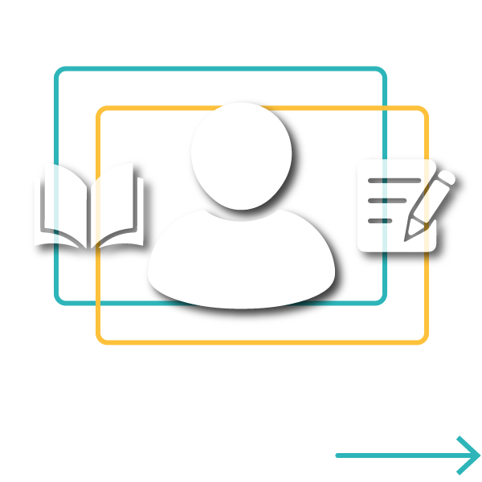
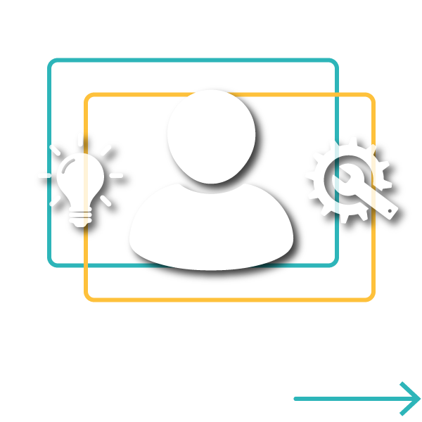
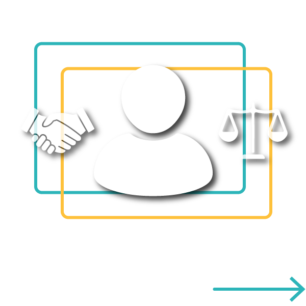

Sabendo disso, podemos passar então para as competências do professor mentor de carreira!
Em destaque, um quadrado azul ciano de moldura azul escuro. No canto superior esquerdo, o desenho de uma molécula.
Material Complementar
Para uma informação mais completa, leia o texto resumo que faz parte dessa unidade, lá você encontra detalhes sobre as áreas e tópicos de formação do orientador profissional e também dos mentores de carreira
No campo teórico, é importante:
Um card colorido para cada tópico e o texto em letras brancas.
Card com efeito degradê azul e laranja:
Competências no campo teórico segundo os cursos do Programa de Mentoria para a Educação Profissional

Card com efeito degradê azul e laranja:
Processos de orientação educacional e profissional
Ter informações relevantes sobre algumas teorias e modelos clássicos e contemporâneos em psicologia das carreiras.
Ter informações relevantes sobre as diferenças individuais no desenvolvimento de carreira em função do gênero, nível socioeconômico, orientação sexual, raça, etnia e necessidades especiais.
Ter informações relevantes sobre algumas técnicas e modelos relacionados ao planejamento de carreira e busca de informação profissional.
Card com efeito degradê azul e amarelo:
Projeto de intervenção para orientação educacional e profissional
Receber informações relevantes sobre como avaliar contextos e cenários.
Card com efeito degradê em tons de azul:
Educação Profissional: estrutura e possibilidades formativas
Ter informações relevantes sobre a estrutura e funcionamento do sistema educativo e de formação (fundamental, médio, técnico e superior).
Card com efeito degradê azul e vermelho:
Concepções de trabalho e Profissionalização
Ter informação relevante sobre a estruturação do mundo do trabalho, legislação e políticas de emprego e trabalho.
Card com efeito degradê azul e verde azulado:
Ações de orientação educacional e profissional
Ter conhecimentos sobre as redes de apoio e os serviços que oferecem intervenções de carreira em ambito local, regional e nacional.
No campo prático, é importante:
Card com efeito degradê azul e laranja:
Competências no campo prático segundo os cursos do Programa de Mentoria para a Educação Profissional

Processos de orientação educacional e profissional
Desenvolver habilidades de intervenção individual, em grupos e institucional para realizar: utilização de instrumentos e técnicas não exclusivas do psicólogo para avaliação de necessidades em orientação de carreira; identificar dificuldades dos alunos.
Projeto de intervenção para orientação educacional e profissional
Planejamento de intervenções.
E no campo pessoal e ético, é importante:
Card com efeito degradê azul e laranja:
Competências no campo pessoal e ético segundo os cursos do Programa de Mentoria para a Educação Profissional

Ações de orientação educacional e profissional
Ter conhecimento do seu próprio desenvolvimento de carreira, critérios de tomada de decisão e escolhas profissionais.
Desenvolver o autoconhecimento (clareza dos próprios valores, estilos de vida e crenças).
Educação Profissional: estrutura e possibilidades formativas
Manter-se atualizado sobre as transformações do mundo do trabalho e das trajetórias de formação.
Projeto de intervenção para orientação educacional e profissional
Realizar atividades que estejam sempre adequadas à sua qualificação técnica e formação profissional.
Em destaque, um quadrado azul ciano de moldura azul escuro. No canto inferior direito, o desenho de uma mão com o dedo indicador apontado para o centro e o link de acesso.
Fique por dentro
Indicamos que visite os conteúdos dos outros cursos do Projeto Mentoria na Educação Profissional para uma informação completa e para tornar-se verdadeiramente um mentor de carreira!